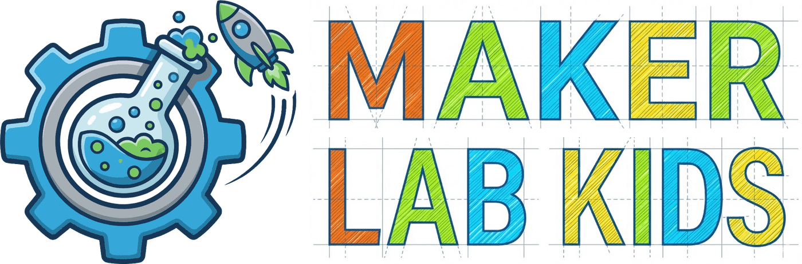

MicroPython samples and sensor demos for Maker Lab Kids workshops at WHS.
Code: github.com/acklenx/raspberrypi · IDE: viper-ide.org
.uf2) from
micropython.org/download/RPI_PICO2_W.
The drive disappears and the board reboots into MicroPython.main.py runs automatically every time the board powers up.
That is how a finished project ships.All the sensor demos follow the same house rules, so a missing part never sinks a lesson.
Demos assume the OLED is there, but run fine without it, and pick it up within about 3 seconds when it gets plugged in.
Start with no sensor, plug it in whenever: readings appear within about 2 seconds. No restart, no reset button.
A startup banner and the first readings print immediately, then a slow heartbeat line every 5 seconds keeps the terminal readable.
Web versions open a Wi-Fi network named PicoLab-N (N is remembered
per board). Dashboard at http://192.168.4.1, raw JSON at /data.
Every demo and every diagram uses this wiring. Learn it once, use it all year.
| Connection | Pico pin | Notes |
|---|---|---|
| I2C bus (shared) | SDA = GP0, SCL = GP1 | One bus, many devices: OLED 0x3C, BME280 0x76/0x77,
BH1750 0x23, ADS1115 0x48 |
| DS18B20 (soil temp) | GP22 | One-wire data, needs a 4.7k pullup to 3V3 |
| Soil moisture | GP26 (ADC0) | Capacitive sensor v1.2, analog out |
| MAX9814 sound | GP27 (ADC1) | Mic amp output, analog |
| GL5528 light | GP28 (ADC2) | Photoresistor divider with a 10k resistor |
| Servo signal | GP16 | SG90 signal wire (orange) |
| Servo power | VBUS (5V) | Power servos from VBUS, never from 3V3 |
Each project comes in two flavors: bench.py
OLED + terminal only, no radio, and main.py + index.html
the same demo plus the PicoLab-N access point and live dashboard.
Grab the project files plus the listed lib/ files.
The original class build: VL53L0X laser time-of-flight sensor reads distance, calibrated raw-to-mm mapping, OLED readout, live web dashboard with min/max.
| Part | Wiring |
|---|---|
VL53L0X 0x29 | 3V3, GND, SDA GP0, SCL GP1 |
OLED 0x3C | same I2C bus |
Upload: main.py, index.html,
lib/ssd1306.py, lib/vl53l0x.py
Dashboard: big mm readout, moving bar, min/max tracking, /data JSON.
Air temperature, relative humidity, and barometric pressure in one I2C part. Also accepts a BMP280 (reports humidity as n/a).
| Part | Wiring |
|---|---|
BME280 0x76/0x77 | 3V3, GND, SDA GP0, SCL GP1 |
Upload: bench.py or main.py + index.html,
lib/picolab.py, lib/bme280.py, lib/ssd1306.py
Dashboard: three big cards, temperature, humidity, pressure.
Capacitive soil moisture sensor v1.2. Reads raw analog, converts to a percent with DRY and WET constants you can calibrate in two minutes (dry in air, dip in water).
| Part | Wiring |
|---|---|
| Soil sensor | 3V3, GND, AOUT to GP26 (ADC0) |
Upload: bench.py or main.py + index.html,
lib/picolab.py, lib/ssd1306.py
Dashboard: moisture percent, bar, and the raw value for calibrating.
DS18B20 waterproof probes, the in-ground thermometer. Several probes can share one wire, and the demo reports each probe it finds.
| Part | Wiring |
|---|---|
| DS18B20 | 3V3, GND, data to GP22 + 4.7k pullup to 3V3 |
Upload: bench.py or main.py + index.html,
lib/picolab.py, lib/ssd1306.py
Dashboard: one temperature card per probe, hot-plug friendly.
Finally, something MOVES. SG90 micro servo with a web slider, a sweep mode, and a follow-light mode that aims the servo based on the light sensor.
| Part | Wiring |
|---|---|
| SG90 servo | signal (orange) GP16, power (red) VBUS 5V, GND (brown) |
Upload: bench.py or main.py + index.html,
lib/picolab.py, lib/ssd1306.py
Dashboard: angle slider and mode buttons, live from any phone on the AP.
GL5528 photoresistor, the classic beginner light sensor, wired as a voltage divider. Cheap, cheerful, and surprisingly useful for worm-box lids.
| Part | Wiring |
|---|---|
| GL5528 + 10k | divider on GP28 (ADC2): LDR to 3V3, 10k to GND |
Upload: bench.py or main.py + index.html,
lib/picolab.py, lib/ssd1306.py
Dashboard: light percent and raw value, bar graph.
BH1750 digital lux meter, the higher-quality light option: real lux numbers you can compare between rooms, boxes, and days.
| Part | Wiring |
|---|---|
BH1750 0x23 | 3V3, GND, SDA GP0, SCL GP1 |
Upload: bench.py or main.py + index.html,
lib/picolab.py, lib/bh1750.py, lib/ssd1306.py
Dashboard: big lux readout with a sunlight-to-darkness scale.
MAX9814 microphone amplifier with auto gain. A live level meter: clap, talk, or play music and watch the level jump.
| Part | Wiring |
|---|---|
| MAX9814 | VDD 3V3, GND, OUT to GP27 (ADC1) |
Upload: bench.py or main.py + index.html,
lib/picolab.py, lib/ssd1306.py
Dashboard: live level bar with peak hold. Try the clap test.
Your first program: print to the terminal, change it, run it again.
Talk to the board live at the >>> prompt, blink the LED by hand,
and learn i2c.scan(), the one-line wiring detective.
The hello world of hardware: blink the onboard LED, then an external one.
The Pico becomes a Wi-Fi hotspot serving a webpage with a visit counter and its own chip temperature. No extra hardware.
Sensor not showing up? In the REPL run
machine.I2C(0, sda=machine.Pin(0), scl=machine.Pin(1)).scan().
An empty list means wiring, not code. OLED answers as 60 (0x3C), BME280 as 118 (0x76).
Power rules: red to 3V3, black to GND, always. Servos are the exception: red to VBUS (5V).
Board not connecting to the IDE? Make sure the USB cable is a data cable, not a charge-only cable. They look identical. It matters.
Wi-Fi confusion: every board runs its own PicoLab-N network. Check the OLED (or the terminal banner) for which N you are, and join that one.